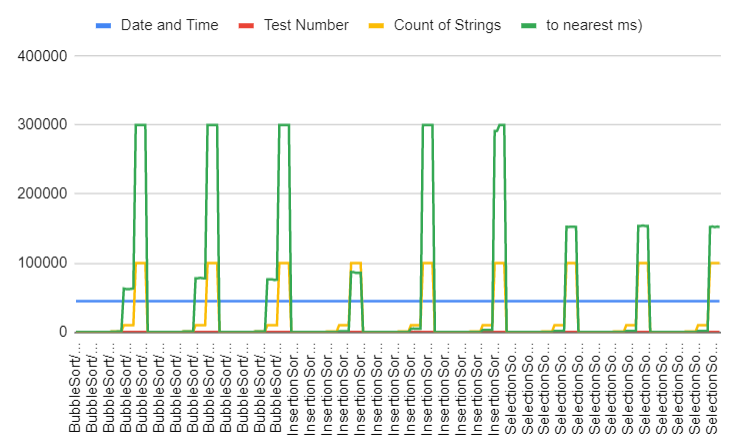
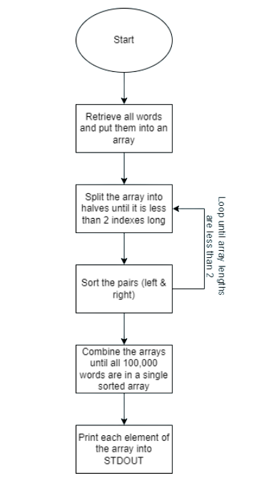

Gaurav Jha
Reynard Gunawan
Hames Dungan
Tahmid Rahman
Optimal Sort Github Respository
Bubble sort Github Respository
Insertion Sort Github Respository
Selection Sort Github Respository
I chose a line graph to plot my data. It seemed the most reasonable because each sort had multiple test for numerous scenarios. It can be seen that bubble sort was the least efficient while the selection sort was the best method of sorting. The ordered text files didn't take as much time as the reverse ordered. Random was longer than the ordered and slower than the reversed.
 